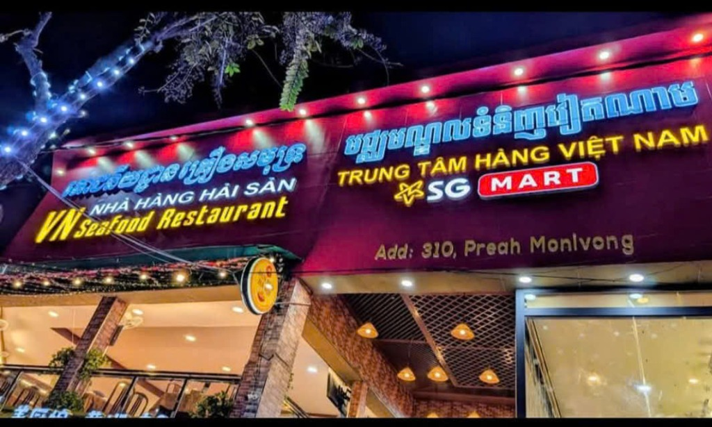
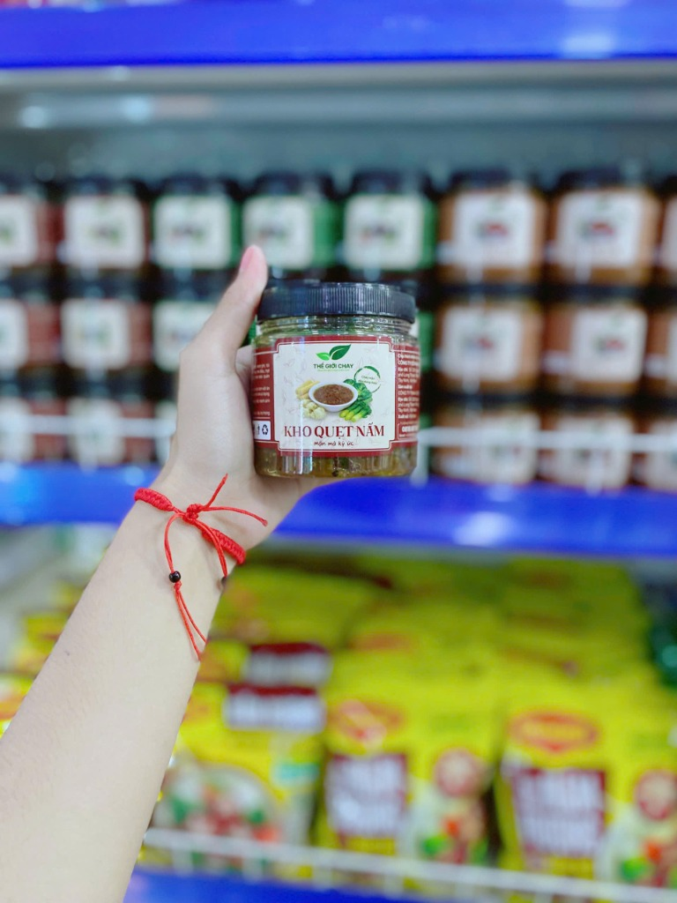
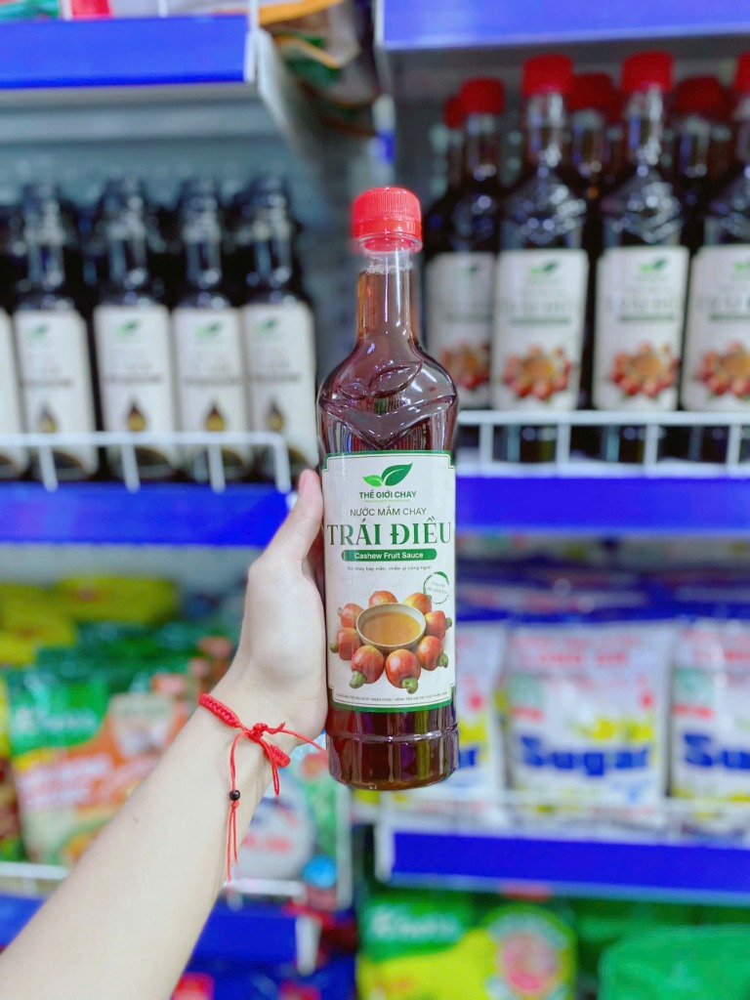
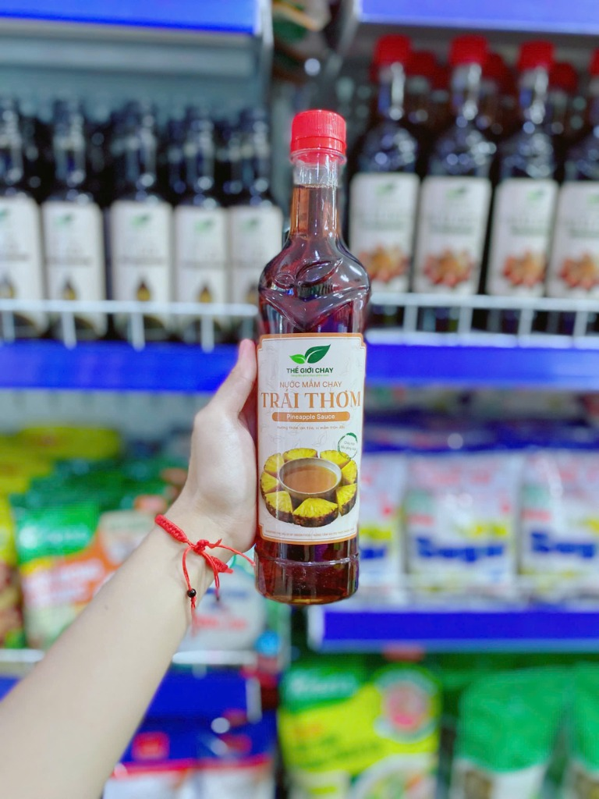
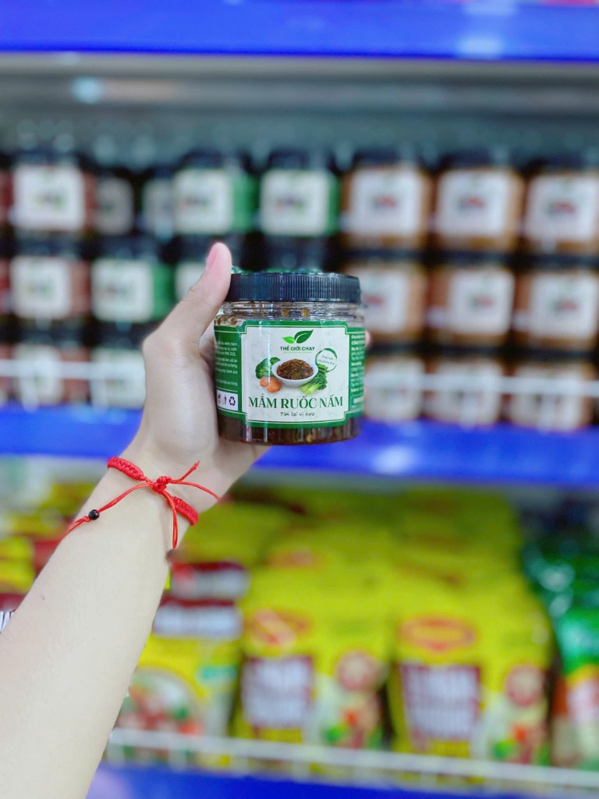

Thế Giới Chay Đã Chính Thức Có Mặt Tại Campuchia Qua Nền Tảng VICATRA
Tinh hoa gia vị chay từ nông sản Việt – Nước mắm trái điều, Kho quẹt nấm, Mắm ruốc nấm – hiện đã có mặt trên kệ hàng SG MART 310 Preah Monivong và sẵn sàng phân phối sỉ tới toàn bộ hệ thống bán lẻ, nhà hàng tại Campuchia.

Trung Tâm Hàng Việt Nam SG MART
Đại lộ Monivong sầm uất – Điểm mua sắm tin cậy của kiều bào và người tiêu dùng Campuchia tìm kiếm thực phẩm chay Việt Nam chuẩn vị.
Mua Sắm Trực Tiếp Tại Phnom Penh: SG MART 310 Monivong
Khách hàng cá nhân, gia đình kiều bào và đại diện nhà hàng có thể trực tiếp đến xem mẫu, trải nghiệm chất lượng và mua sắm ngay tại kệ hàng.
TRUNG TÂM HÀNG VIỆT NAM SG MART
មជ្ឈមណ្ឌលទំនិញវៀតណាម SG MART
-
Địa chỉ: 310 Preah Monivong Blvd, Phnom Penh, Campuchia (Nằm cùng khu vực VN Seafood Restaurant).
-
Giờ mở cửa: 08:00 – 22:00 (Tất cả các ngày trong tuần)
-
Giao hàng nội thành: Hỗ trợ ship nhanh tại Phnom Penh qua Grab / Foodpanda / Nham24.
-
Phân phối sỉ liên tỉnh: Gửi chành xe đi Siem Reap, Sihanoukville, Battambang, Kampot, Poipet...
4 Dòng Sản Phẩm "Ngôi Sao" Được Yêu Thích Nhất
Hình ảnh thực tế chụp trực tiếp trên kệ hàng SG Mart Phnom Penh. Chắt lọc tinh hoa từ nấm đông cô và các loại trái cây nhiệt đới Việt Nam.

Có sẵn tại SG MartKho Quẹt Nấm – Món Quà Ký Ức
Đậm đà vị mặn ngọt sánh quyện, dẻo quánh chuẩn vị kho quẹt truyền thống. Chấm rau củ luộc, ăn cùng cơm cháy giòn tan hoặc cơm nóng ấm bụng những ngày mưa.

Có sẵn tại SG MartNước Mắm Chay Trái Điều (Cashew Sauce)
Sáng chế độc đáo lên men từ thịt trái điều Bình Phước chín mọng. Màu cánh gián trong veo, vị ngọt bùi dịu nhẹ, thay thế hoàn hảo cho nước mắm truyền thống.

Có sẵn tại SG MartNước Mắm Chay Trái Thơm (Pineapple Sauce)
Hương dứa chín nhiệt đới ngọt thanh, thoang thoảng dịu êm. Rất thích hợp pha nước chấm chua ngọt ăn kèm bánh xèo chay, bún chả giò hoặc làm gia vị ướp xào.

Có sẵn tại SG MartMắm Ruốc Nấm – Tìm Lại Vị Xưa
Hương vị mắm ruốc nồng đượm được tinh chế từ nấm sạch. Món chấm khoái khẩu cùng xoài non, cóc ổi hoặc làm cốt nấu Bún Bò Huế chay, Lẩu mắm chay đậm vị.
Hành Trình Đưa Nông Sản Chay Việt Chinh Phục Thị Trường Campuchia
Campuchia là miền đất Phật giáo với hàng triệu người dân có thói quen ăn chay định kỳ vào những ngày rằm, mùng một (*Thngai Sel - ថ្ងៃសីល*) và số lượng lớn người ăn chay trường, kiêng thịt động vật. Cùng với đó là hơn 100.000 kiều bào Việt Nam đang sinh sống và làm việc tại đây luôn tìm kiếm hương vị gia vị quê nhà.
Thông qua VICATRA – Nền tảng kết nối xúc tiến thương mại Việt Nam - Campuchia, Thế Giới Chay tự hào đưa các dòng sản phẩm chất lượng cao, có đầy đủ giấy phép kiểm định chất lượng, bao bì song ngữ chuẩn xuất khẩu đến tận tay người tiêu dùng xứ Chùa Tháp.
Vì Sao Chọn Thế Giới Chay Qua VICATRA?
-
Nguồn gốc nguyên liệu minh bạch: Trái điều Bình Phước, nấm đông cô, dứa tươi, mãng cầu Tây Ninh lên men tự nhiên.
-
Bảo đảm sức khỏe: Không bột ngọt công nghiệp độc hại, không phẩm màu hóa học, an toàn cho cả người lớn tuổi và trẻ nhỏ.
-
Hàng có sẵn tại Phnom Penh: Không phải chờ đợi vận chuyển tiểu ngạch, nguồn hàng ổn định, giá niêm yết rõ ràng.
-
Hỗ trợ đối tác B2B toàn diện: Cung cấp tài liệu sản phẩm, hình ảnh quảng cáo tiếng Khmer, chiết khấu sỉ theo bậc số lượng.
Catalog Sản Phẩm Thế Giới Chay Tại Campuchia
Tra cứu từng mã SKU, dung tích đóng gói và liên hệ nhanh để nhận bảng giá sỉ dành cho đại lý và nhà hàng.
Câu Hỏi Thường Gặp
1. Tôi ở Phnom Penh thì có thể mua lẻ ở đâu và có giao tận nhà không?
2. Tôi muốn mua sỉ về bán tại Siem Reap, Sihanoukville thì vận chuyển thế nào?
3. Sản phẩm nước mắm chay từ trái điều và trái thơm có gì đặc biệt hơn các loại khác?
4. Chính sách bảo lãnh thanh toán B2B của VICATRA hoạt động ra sao?
Sẵn Sàng Trải Nghiệm Hoặc Nhập Sỉ Ngay Hôm Nay?
Đội ngũ tư vấn song ngữ Việt – Khmer của chúng tôi luôn túc trực để gửi báo giá sỉ, gửi mẫu thử hoặc hướng dẫn đường đến showroom nhanh nhất.